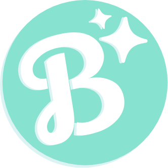
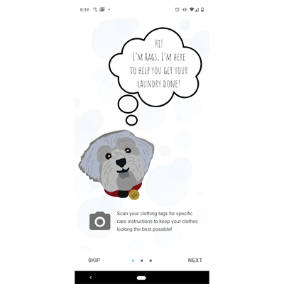
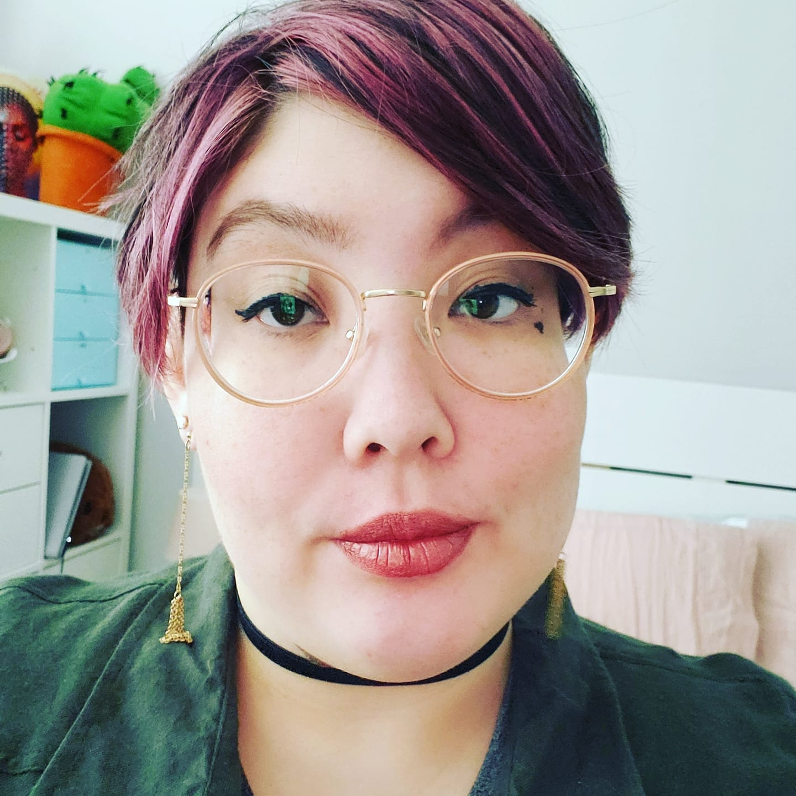

<!DOCTYPE html>
<html lang="en"></html>
<html>
    <head>
         <!-- Required meta tags -->
    <meta charset="utf-8">
    <meta name="viewport" content="width=device-width, initial-scale=1">
    <title>Britt Cassidy Portfolio</title>
    <link href="https://cdn.jsdelivr.net/npm/bootstrap@5.0.2/dist/css/bootstrap.min.css" rel="stylesheet" integrity="sha384-EVSTQN3/azprG1Anm3QDgpJLIm9Nao0Yz1ztcQTwFspd3yD65VohhpuuCOmLASjC" crossorigin="anonymous">
    <link rel="stylesheet" href="css/index.css">
    <link rel="preconnect" href="https://fonts.googleapis.com">
<link rel="preconnect" href="https://fonts.gstatic.com" crossorigin>
<link href="https://fonts.googleapis.com/css2?family=Dela+Gothic+One&family=Manjari:wght@100;400;700&display=swap" rel="stylesheet">
    </head>
    <body>  
       
    <div class="sideBar overflow-hidden">
            <div class="logoBox"><a href="#"></a></div>
            <nav>
                <h1>hello there!<br> i'm britt :)</h1>
                <p>Welcome to my mind palace. I'm a freelance graphic designer who believes the best designs are a little bit magic. Feel free to look around and get to know me and my work!</p>
                    <a href="#about">about</a>
                    <a href="#work">work</a>
                    <a href="#contact">contact</a>
                    <a href="https://drive.google.com/file/d/1skOuVMzylRikWKzkYSAHWR7_FZYNnAaq/view?usp=sharing" target="blank">resume</a>
                    <div class="socialBar">
                        <a href="#"></a>
                        <a href="#"></a>
                        <a href="#"></a>
                    </div>  
            </nav>
        </div>
    <div class="mainContent">  
    <div class="content">
        <h2 id="work">work</h2>
        <div class="workGrid container">
        <div class="row align-items-center projRow">    
        <div class="col projLCol"><a href="projpage1.html"><br>Mobile App Prototype: Rags</a></div>
        <div class="col projRCol"><a href="projpage2.html"><br>Project 2</a></div>
        <div class="row align-items-center projRow"></div>    
        <div class="col projLCol"><a href="projpage3.html"><br>Project 3</a></div>
        <div class="col projRCol"><a href="projpage4.html"><br>Project 4</a></div>
        </div>  
    </div> 
    </div>   
        <div class="content">
            <h2 id="about">about</h2>
            
            <p>My name is Britt Cassidy and my pronouns are they/them.
                <br>    
                I know that design is an incredible tool that lets us foster real human connection, and I specialize in bringing that to my work. My skills include Adobe XD, Illustrator, Photoshop, creating dazzling user-focused prototypes, and playing well with others.
                <br>
                In my free time I enjoy creative writing, play games of all sorts (my favorites are DND and Animal Crossing) and consuming video essays on YouTube on a range of topics. I love learning new things all the time.</p> 
        </div>
        <div class="content">
            <h2>skills</h2>
            <h3>user research</h3>
            <p>I love talking with people and finding out their stories, their problems & potential solutions. Zoom recordings are my best friend when it comes to discovering who my user is.</p>
            <h3>user empathy</h3>
            <p>My empathy is my secret weapon, I have a knack for being able to put myself in the mindset of others, to form connections that enable me to really understand what people need.</p>
            <h3>persona creation</h3>
            <p>I bring my background in creative writing to my design work, as a natural storyteller I am driven to connect with my users and then tell their stories to guide my design thinking.</p>
            <h3>tools</h3>
            <ul>
                <li>Paper and Pencil</li>
                <li>Adobe XD</li>    
                <li>InVision</li>
                <li>Illustrator</li>
                <li>Photoshop</li>    
                <li>Miro</li>
            </ul>
        </div>
       <div class="content">
           <h2 id="contact">contact</h2>
       </div> 
</div>
<script src="https://cdn.jsdelivr.net/npm/bootstrap@5.0.2/dist/js/bootstrap.bundle.min.js" integrity="sha384-MrcW6ZMFYlzcLA8Nl+NtUVF0sA7MsXsP1UyJoMp4YLEuNSfAP+JcXn/tWtIaxVXM" crossorigin="anonymous"></script>
    </body>
</html>